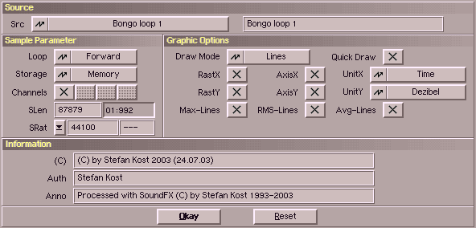

In diesem Fenster lassen sich Sample-spezifische Einstellungen setzen und verändern.
Dazu stehen folgende Schalter zur Verfügung :
| Gadget | Beschreibung |
|---|
| Draw Mode | Über dieses Cycle-Gadget kann man auswählen, wie das Sample
gezeichnet werden soll. Es sehen folgende Modi zur Verfügung :
- 1. Lines
- 2. Dots
- 3. DotAbs
- 4. Filled
- 5. FilledAbs
- 6. FilledHQ (sehr exaktes aber langsames Zeichnen)
|
| Loop | Mit diesem Schalter kann der Loopmodus gewählt werden. |
| Storage | Hiermit können Sie einstellen, ob das Sample im Speicher
gehalten wird oder auf die Festplatte ausgelagert werden soll.
SoundFX entscheidet dies normalerweise automatisch. Sie können
dies aber nutzen, wenn sie ein Sample für eine Weile nicht
benötigen, den Speicher aber für andere Samples brauchen. |
| Channel | Auswahl des Kanals, der im Fenster dargestellt werden soll.
Über die einzelnen Buttons können die entsprechenden Kanäle
an- und ausgeschalten werden. In die nachfolgenden Operationen
werden nur selektierte Kanäle einbezogen. |
| Raster X/Y | Mit diesem Checkboxen können Sie das Zeichnen des Rasters ausschalten. |
| Axis X/Y | Und mit diesen können Sie die Achsen abschalten. Damit vergrössern Sie den Zeichenbereich für die Wellenform. |
| Unit X/Y | Mit diesen Gadgets können Sie die Einheiten für jede Achse
auswählen. Diese wird auch von der Statusbar benutzt. |
| Max-Lines | Die MaxLines zeigen die maximale Aussteuerung eines Samples an. |
| RMS-Lines | Diese Linien zeigen die wirkliche akustische Lautstärke. Die
Berechnung dieser und auch der nächsten, kann etwas dauern (bei längern Samples). |
| Avg-Lines | Und diese zeigen die durchschnittliche Lautstärke an. |
| Quick Draw | Wenn dies an ist, wird während des Scrollens das Raster und die Max-, RMS- und AvgLines weggelassen. |
| SLen | Hier können Sie die Länge des Samples ändern. Dies ist notwendig wenn Sie ein kurzes Sample geladen haben, und darauf z.B.
ein 'Echo' berechnen wollen. Tragen Sie hier einfach einen
größeren Wert ein und schließen Sie die Eingabe mit Enter ab.
SoundFX hängt jetzt einen Leerbereich an das Sample an. Jetzt haben
Sie genug Platz für das Effektsignal.
SoundFX zeigt ihnen außerdem gleich die Länge in der aktuellen Einheit an. |
| SRat | Es gibt folgende drei Möglichkeiten die Abspielrate zu ändern.
| PopUp-Button |
Hiermit gelangen Sie in das
Periodenauswahlfenster.
Die ausgewählten Werte werden dann in den nebenstehenden
Gadgets eingetragen. |
| Raten Gadget |
Hier können Sie die Rate direkt eingeben. Je
größer der Wert, desto höher wird das Sample
abgespielt. Normale Abspielwerte liegen zwischen
8000 und 96000. Nach erfolgter Eingaben wird
die entsprechende Note im nebenstehenden
Gadget eingetragen. Falls für die eingegebene
Periode keine Note existiert wird "---" angezeigt. |
| Noten Gadget |
Hier können Sie die Note direkt eingeben.
Diese muß folgendes Format haben.
- 1. Zeichen : Ton="C,D,E,F,G,A,H"
- 2. Zeichen : weiße Tasten="-", schwarze Tasten="#"
- 3. Zeichen : Oktave="0,1,2,3,4,5,6,7"
Beispiele : "C#3", "E-0", "H-7"
Der zugehörige Periodenwert (Protracker) wird danach im
nebenstehenden Gadget eingetragen. |
Wenn Sie die Rate des Puffers ändern, der gerade abgespielt
wird, hören Sie die neue Rate sofort. |
Weiterhin können Sie die Texte die mit dem Sample in einigen Formaten gespeichert werden ändern.
Mit "Okay" wird das Fenster geschlossen und mit "Reset" werden die Standardeinstellungen die sie
In den Preferences für Samplefenster eingestellt haben wiederhergestellt (bitte
beachten Sie jedoch, daß die Einstellungen für "SLen" und "SRat" nicht wiederhergestellt werden).
|